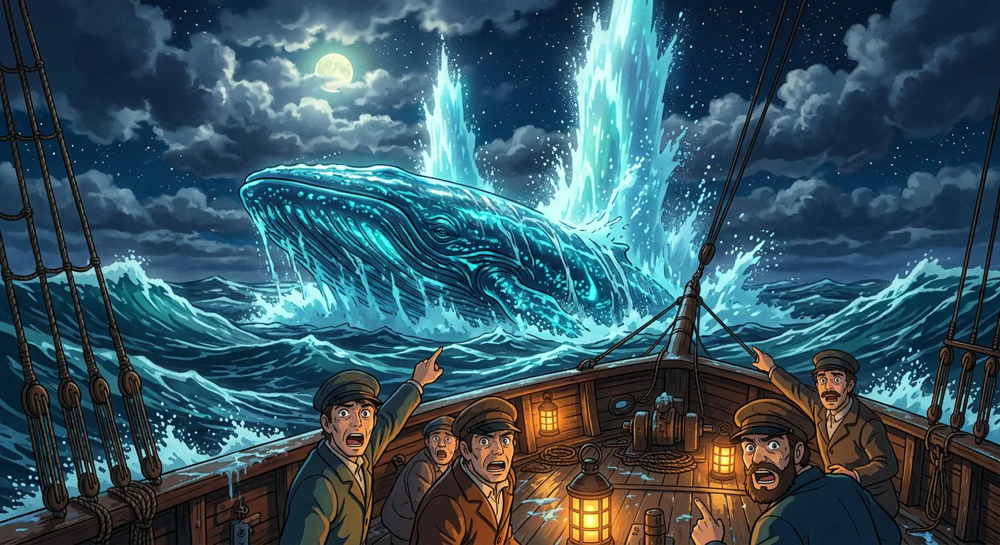
The Ocean's Mysterious Leviathan Awakens
In the year 1866, sailors saw something amazing in the ocean. It was very big and very long, longer than any whale. It glowed with a soft light and moved faster than anything. Ships from many countries spotted it swimming in waters all around the world. People everywhere talked about this mystery. What could it be?
Some ships got too close to the strange thing. One ship bumped into something in the dark water and got a hole in its side. Another ship called the Scotia got a big scratch on its bottom. The sailors were very surprised and a little worried. No one knew what was making these holes. Scientists wrote many letters arguing about what it could be. Some people made up funny songs about the sea creature. Everyone wanted to know the truth about this giant mystery swimming in the deep blue ocean.
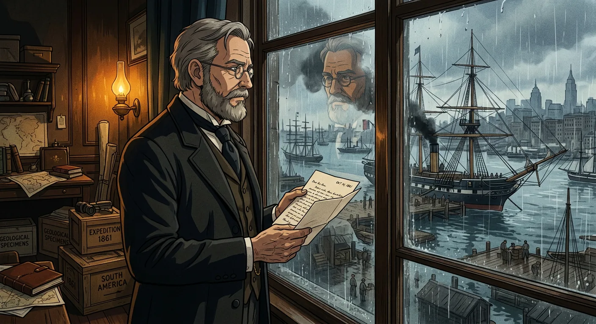
A Naturalist Weighs the Evidence
Professor Aronnax was a scientist who studied nature. He had just come back from a long trip, carrying many interesting rocks and plants. He was getting ready to sail home to Paris. But then something exciting happened that changed all his plans.
Ships all over the world had seen something strange in the ocean. It was big and fast and very mysterious. Some people thought it was a sea monster. Others thought it was a special underwater boat. Nobody knew for sure. Aronnax read every story about it, but even he could not figure it out. He wrote about what he thought it might be. Maybe it was a giant narwhal with a very strong horn. Many people liked his idea.
Then the mystery creature disappeared for two whole months. Everyone wondered where it went. When it was spotted again far away, a ship called the Abraham Lincoln got ready to find it. Aronnax got a letter asking him to join the adventure. He said yes right away. He had no idea what amazing things were waiting for him.
The rest is waiting.
58 illustrated classics. Cinematic, anime, and kids editions. $4.99 a month — about the price of a coffee.
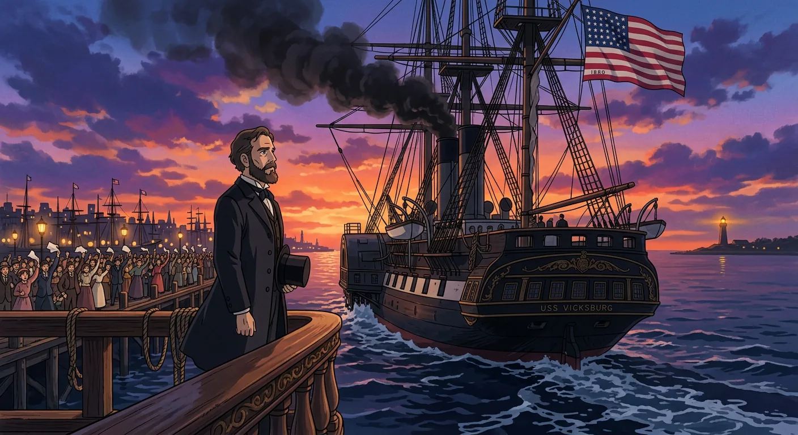
A Fateful Letter Changes Everything
Professor Pierre Aronnax got a very important letter one day. It was from the Secretary of Marine, asking him to help find a mysterious sea creature. Before the letter came, he was tired and wanted to rest at home with his special collections. But after reading just a few words, everything changed! Suddenly he felt excited and knew he had to go on this adventure.
His loyal helper Conseil was ready to go too. Conseil never complained about long trips, no matter how far away they went. He was calm and kind and always took good care of the Professor. Together they packed their bags and headed to the ship called the Abraham Lincoln. The big ship was very fast and had a friendly captain named Farragut. When they left the harbor, crowds of people cheered and waved goodbye. Soon the ship sailed out onto the wide, wonderful ocean, heading toward an adventure that would be full of amazing surprises.
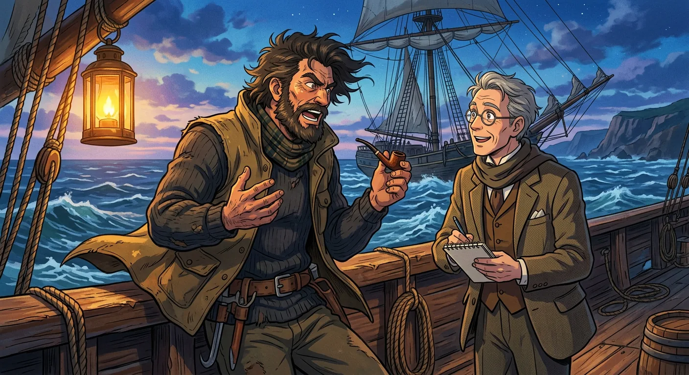
The Skeptical Harpooner's Introduction
Captain Farragut was the leader of a big ship called the Abraham Lincoln. He believed with all his heart that a strange sea creature was real. He wanted to find it more than anything in the world. Everyone on the ship felt excited too. The sailors watched the ocean day and night, even when the sun made the deck very hot. There was a big prize for whoever spotted the creature first, so all eyes looked out at the sparkling waves.
The ship had a special helper named Ned Land. He was a tall, strong man from Canada who was very good at catching whales. Ned became friends with the storyteller, and he loved to share wonderful tales about icy adventures far away. But here is the funny thing: Ned did not believe the sea creature was real! He thought it was just a silly story. The storyteller tried to explain why the creature might be true. Ned listened carefully, but he still was not sure what to think.
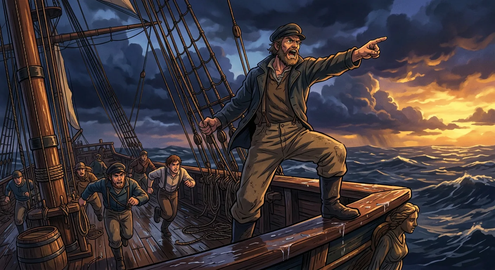
Ned Land's Skill and Fruitless Searching
The big ship called the *Abraham Lincoln* sailed for a long time looking for the mystery sea creature. One day, they met some whale-hunting ships. A captain asked if Ned Land could help catch a whale nearby. Ned was famous for being the best harpooner ever! The commander said yes, and Ned did something amazing. He caught two whales with his special throwing spear. Everyone was very impressed by how good he was.
The ship sailed around the bottom of South America and into the Pacific Ocean. Everyone watched the water day and night hoping to spot the creature. They barely slept or ate because they wanted to find it so badly. But weeks and weeks went by with no luck. People started feeling grumpy and wanted to give up. The commander asked everyone to keep looking for just three more days. On the very last night, when hope was almost gone, Ned Land suddenly shouted out loud. He had finally spotted something in the water!
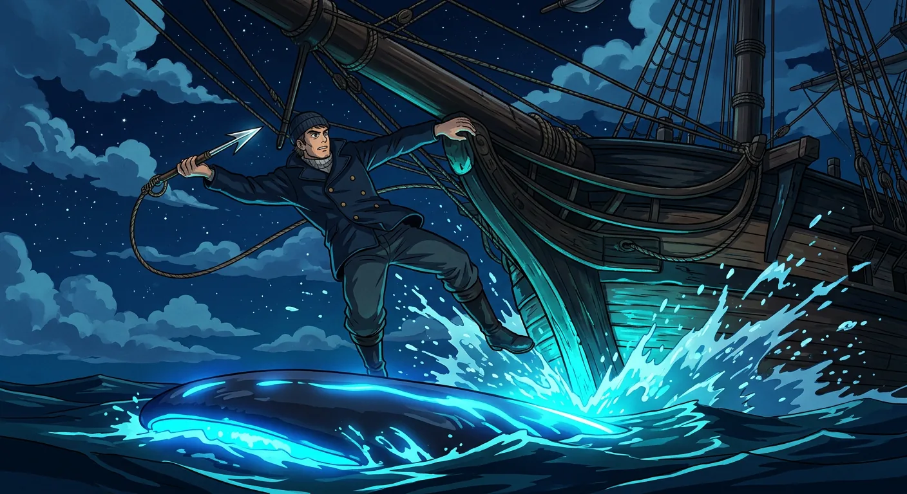
The Glowing Beast Circles the Frigate
The ship sailed through a very dark night. Ned Land had amazing eyes. He spotted something strange far out in the water. The sea looked like it was glowing! It was not just regular sparkles. This light was bright and beautiful, shaped like a giant oval.
The glowing creature swam all around the ship. It moved so fast! It made circles of shimmery light in the water. The captain decided to wait until morning to get closer. All night long, the crew stayed awake watching the mysterious light. Sometimes it disappeared, but it always came back.
When the sun came up, they could finally see it better. It was long and dark with a big splashing tail. The ship chased it all day long, but the creature was too fast. It seemed to be playing a game! At night the glow returned, and Ned Land threw his sharp harpoon. It hit something hard, the light went out, and big waves splashed over the deck.
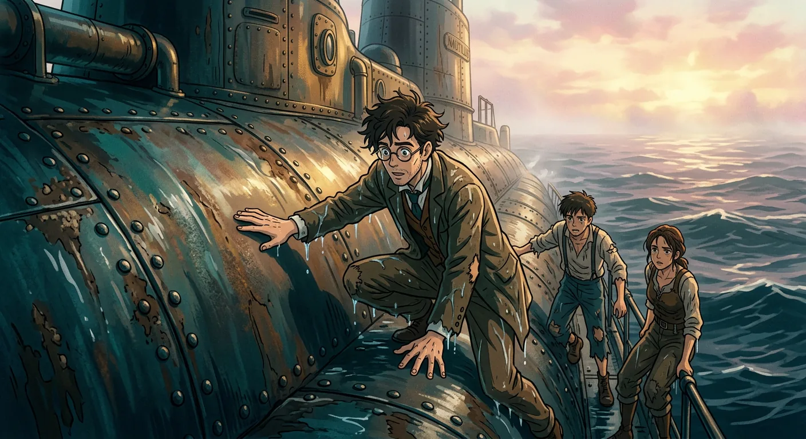
Adrift in Darkness With Conseil
I fell off the big ship into the dark water. It was very scary! I swam back up as fast as I could. But when I looked around, the ship was already sailing away. Its lights got smaller and smaller until they were gone. I was all alone in the cold, dark sea.
Then I felt a hand grab me. It was my good friend Conseil! He had jumped in to help me. We took turns swimming and floating on our backs to rest. We had to wait many hours until morning came. The water sparkled around us like tiny stars. After a long time, we heard another voice calling out. It was Ned Land, the brave sailor! He was standing on something hard in the water. We swam over and climbed up too. It felt like metal, not a whale at all! This was not a sea creature. People had built it! It was a big underwater boat made of iron. In the morning, a door opened and some people came out. They took us inside the strange boat to see what was there.
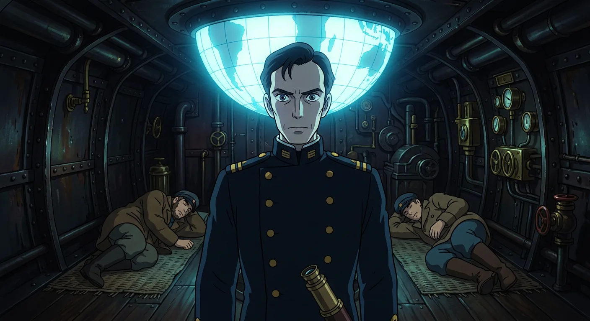
Captives in the Electric Darkness
Professor Aronnax, his helper Conseil, and the strong harpooner Ned Land were taken aboard a strange underwater ship. Everything happened so fast! One moment they saw bright light, and the next they were in total darkness. They climbed down a metal ladder and heard a heavy door close behind them. Now they were stuck in a small room and could not see a thing.
Ned was very upset and waved his arms around. Conseil stayed calm and told everyone to wait. The Professor felt around the dark room with his hands. He found metal walls, a wooden table, and some stools. After a while, a bright light clicked on from the ceiling! It was so bright they had to cover their eyes. Two mysterious men came in. One was strong with dark hair. The other was tall and quiet, with a calm, serious face. They spoke in a language nobody understood. Later, someone brought food and clean clothes. The three friends ate the yummy fish dinner, then fell asleep on the soft floor. The Professor wondered where this amazing ship was taking them, deep down into the sea.
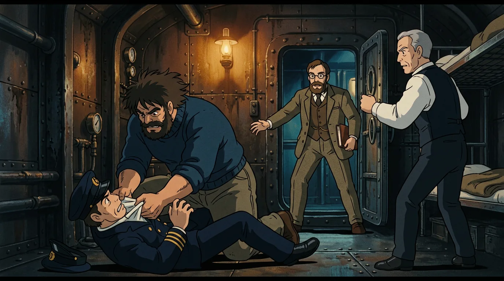
Captives Await Air and Answers
Professor Aronnax woke up feeling much better after a long sleep. His friends Conseil and Ned Land were still sleeping nearby. They were all in the same metal room as before, still trapped inside the strange underwater ship. But something was wrong. The air in the room felt heavy and hard to breathe. Aronnax worried they might run out of fresh air soon. Then something wonderful happened! Cool, fresh sea air came rushing into their little room. The ship had gone up to the surface to get more air, just like a whale does when it needs to breathe.
When his friends woke up, everyone felt very hungry. They waited and waited for food, but nobody came. Ned Land got more and more upset. He shouted and banged on the walls, but nothing happened. Finally, they heard footsteps outside. The door opened, and just when things got a bit wild, a voice spoke to them in French! Someone on this mysterious ship wanted to talk to them at last.
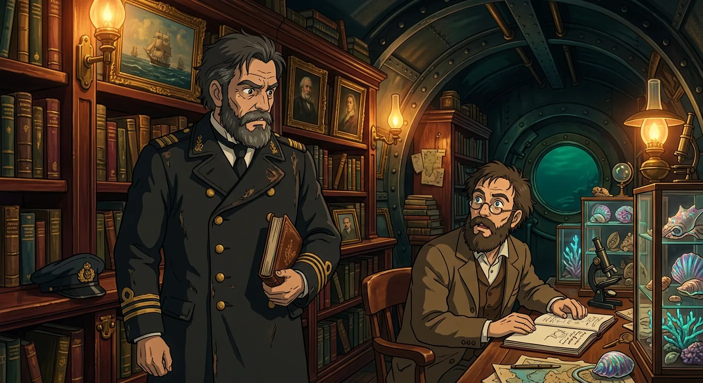
The Captain Reveals Himself
In this chapter, we finally meet the captain of the amazing underwater ship. His name is Captain Nemo, which means "Nobody" in an old language. He is a mysterious man who has decided to live under the sea, far away from the world above. Captain Nemo already knew who his three guests were. He knew Aronnax was a professor who studied nature. He knew Conseil was his loyal helper. And he knew Ned Land was a harpooner from a big ship.
Captain Nemo told them they must stay on his submarine called the Nautilus. They could not leave, but they could explore the ship freely. And what a ship it was! There was a beautiful dining room with food that all came from the ocean. There was a library filled with thousands of books. There was a room like a museum, with famous paintings and treasures from the sea. Aronnax felt amazed by everything he saw. Captain Nemo smiled and said there was still much more to show him about how his wonderful ship worked.
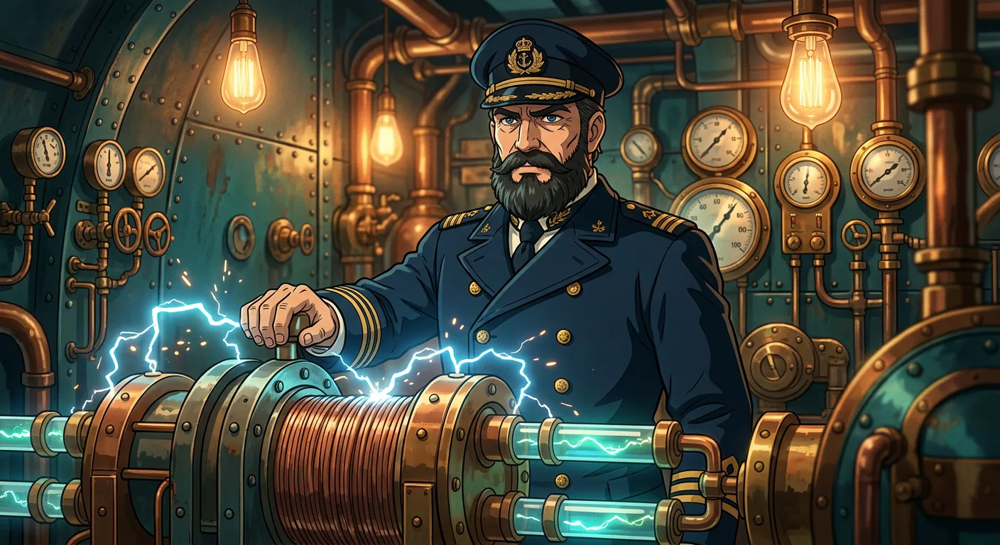
Powering the Deep with Ocean's Energy
Captain Nemo showed Professor Aronnax his special room full of amazing tools. There were instruments to measure temperature and predict storms. There was a compass to help find the way in the dark ocean. But the most wonderful secret was how the Nautilus worked. Everything ran on electricity! The lights, the heat, and the big spinning propeller all used this amazing power. And where did the electricity come from? From the ocean itself! Captain Nemo found a clever way to make energy from sea water.
They walked through the submarine together and saw so many interesting rooms. There was a cozy kitchen where electricity did all the cooking. There was a bathroom with hot and cold water. They passed a hidden little boat tucked inside the big submarine, ready for special trips. The engine room was bright and full of wonderful machines. The huge propeller could push them very fast through the water. Aronnax felt so curious about everything and wanted to learn more secrets.
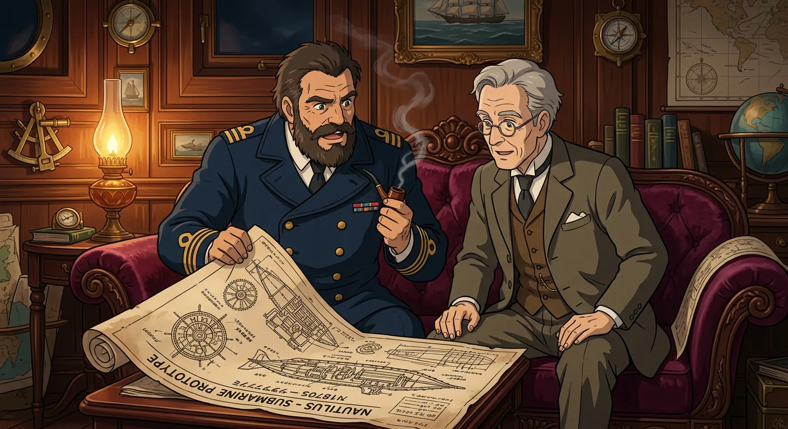
Anatomy of the Nautilus Revealed
Captain Nemo sat down with Professor Aronnax to talk about his amazing submarine. He showed drawings and explained how the Nautilus was built. The submarine is shaped like a long, smooth cigar. This shape helps it glide through the water so easily. It has two strong metal hulls that keep everyone safe inside.
Aronnax wondered how the submarine could dive so deep without getting crushed. Nemo smiled and said electricity gives it special power. The Nautilus has a steering wheel for turning left and right. It also has special fins on the sides that help it go up and down. The captain sits in a little glass room at the front. A bright light shines ahead so he can see in the dark water. That glow is what made people think the Nautilus was a glowing sea creature! Nemo built his submarine in secret on a faraway island. He is very, very rich and loves his wonderful ship.
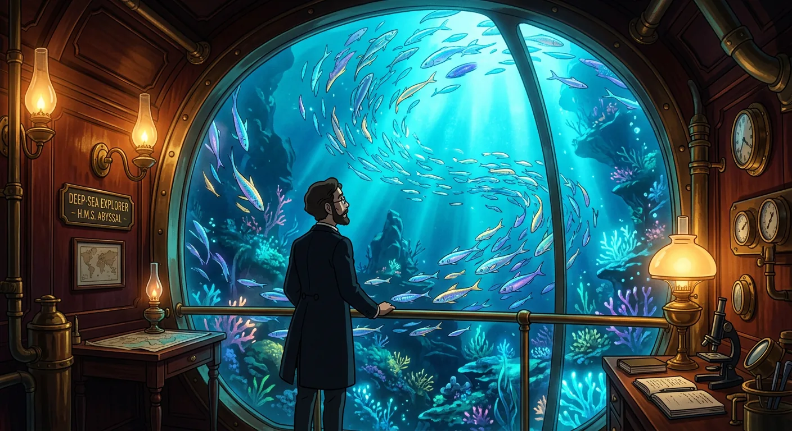
Charting the Pacific's Warm Current
The ocean is a very big place full of water. It covers so much of our world! The submarine called the Nautilus was traveling through the Pacific Ocean. This ocean is calm and peaceful, with gentle waves.
Captain Nemo wanted to see where they were. The submarine rose up until the top poked out of the water. Professor Aronnax looked at maps and found something special. They were floating in a warm river inside the ocean! It came all the way from warm places far away. People called it the Black River because of its deep blue color.
Then something wonderful happened. The walls of the room slid open like magic. Behind them were big glass windows! The travelers could see right into the glowing ocean. Beautiful fish swam past in every color you can imagine. There were blue fish and silver fish and even long wiggly ones. It was like watching a parade of sea creatures. Everyone felt amazed by this underwater world full of wonders.
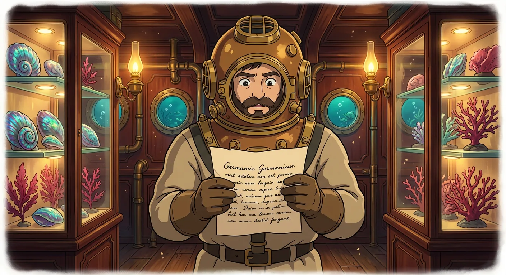
Mysterious Silence and a Hunting Invitation
Professor Aronnax woke up after a very long sleep. His friend Conseil came to say good morning, and Ned Land was still snoring away. But the Professor was thinking about Captain Nemo, who had not been seen for a whole day. Where could he be? The big room on the submarine was empty and quiet. So Aronnax looked at all the beautiful shells and colorful sea plants in their glass cases. Many days went by like this, with no sign of the Captain or his crew. The three friends wondered if something was wrong, but they had good food and were free to walk around.
Then one morning, Aronnax found a note on his table. Captain Nemo was inviting them to go hunting in an underwater forest near a faraway island! Ned was excited because he thought they might see land again. When the Captain finally appeared, he showed them special suits for walking on the ocean floor and amazing tools for their adventure. What wonderful things would they discover next?
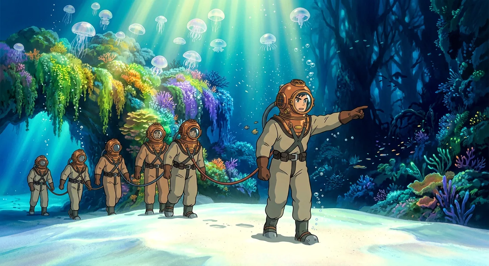
Exploring the Ocean's Sunlit Floor
The *Nautilus* had special suits for walking underwater! They were made of stretchy rubber and could keep people safe and dry. Ned Land did not want to go because the forest they would visit was under the sea, not on land. He wanted to hunt real animals, not look at ocean plants. But Conseil said he would follow Professor Aronnax anywhere.
The Professor and Conseil put on heavy boots and big copper helmets with thick glass windows. Captain Nemo and a very strong helper came too. Water filled a small room around them, and then a door opened to the ocean floor! They stepped outside and began to walk on the sandy bottom. Sunlight sparkled through the water and made everything glow. They saw colorful rocks covered in rainbow sea creatures and floated past soft gardens of coral and waving sea plants. After walking for a long time, Captain Nemo stopped and pointed ahead. There in the dim blue light was a mysterious underwater forest, waiting to be explored.
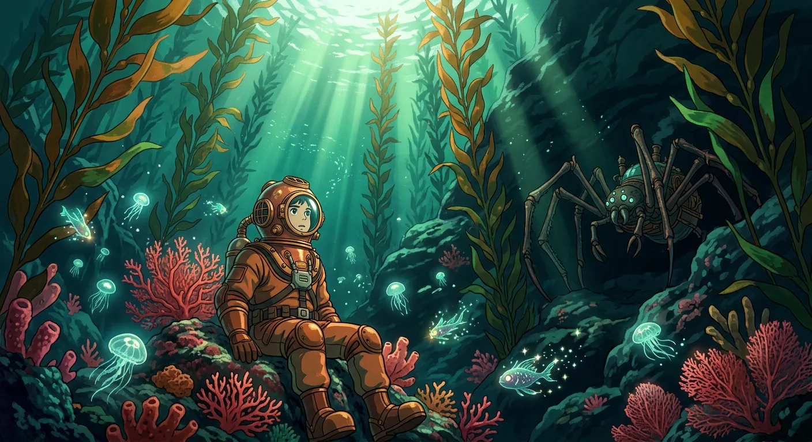
Wonders of the Underwater Wilderness
The explorers went for a walk in an underwater forest. It was one of the most amazing places Professor Aronnax had ever seen. Everything grew straight up toward the light above. The seaweed and water plants stood tall like quiet guards. When you pushed them aside, they bounced right back up again.
So many beautiful things grew there! Red plants spread out like fans. Tall fern-shaped seaweed reached up fifteen feet high. Some things looked like plants but were really animals. Some animals looked just like plants. It was all wonderfully mixed up together.
After walking for a while, Captain Nemo told everyone to rest. They lay down on the sandy ocean floor and fell fast asleep. When Aronnax woke up, he saw a very big crab looking at him with tiny eyes. Captain Nemo shooed it away. Then they walked even deeper until they reached a tall rocky wall. This was as far as they could go. The tired explorers headed back to their submarine, feeling amazed by everything they had seen.
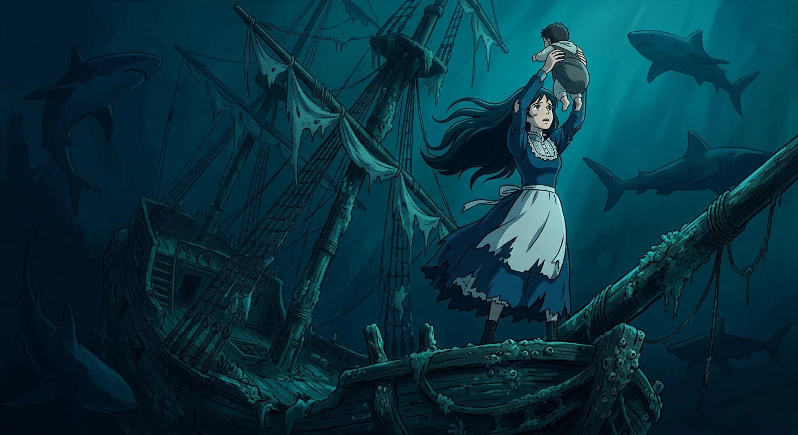
The Living Ocean's Depths Revealed
Professor Aronnax woke up feeling rested and went up to the top of the *Nautilus*. He found Captain Nemo looking out at the wide, beautiful ocean. The crew was busy pulling up big fishing nets. The nets were full of amazing fish and sea creatures! Some would be saved and some would be cooked for dinner. Captain Nemo talked to the Professor about how wonderful the ocean is. He said it was like a living thing with its own heartbeat. He even dreamed about people building towns under the sea someday. But then the Captain grew quiet, as if remembering something sad. After that day, Captain Nemo did not visit very often. The *Nautilus* kept traveling through the Pacific Ocean for many weeks. They crossed warm waters near the equator and passed by faraway islands. The Professor spent his days reading books and watching colorful fish swim past the big windows. The submarine glided through the deep blue water like a gentle giant exploring a hidden world.
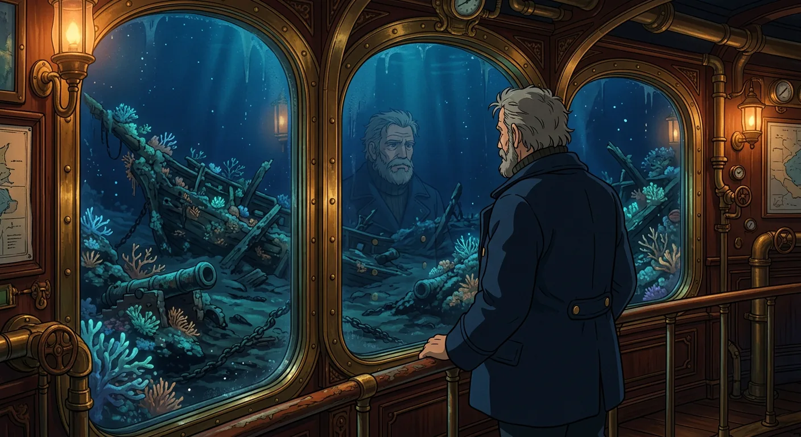
Coral Tombs and Lost Expeditions
The Nautilus sailed on through December, passing over old ships resting on the sandy sea floor. Professor Aronnax saw anchors and broken boats covered in shells and sea plants. They reached the Pomotou Islands, where tiny coral animals build big reefs very slowly. These little creatures work together for many, many years. Captain Nemo said something interesting about the world needing new people, not new lands.
They passed pretty Tahiti and spent Christmas at sea. Ned Land missed celebrating the holiday. Then Captain Nemo pointed to an island called Vanikoro on a map. Long ago, a famous explorer named La Pérouse had sailed there and was never seen again. Through the Nautilus windows, they saw old ship parts covered in beautiful coral and sea flowers. Captain Nemo showed Aronnax some very old papers from the lost ships. He seemed sad looking at the peaceful underwater resting place. The Professor could tell the Captain felt a special connection to sailors who loved the sea.
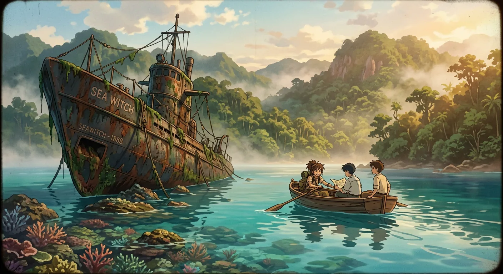
Stranded in Treacherous Coral Waters
The *Nautilus* sailed very fast across the ocean. In just three days, it traveled a great distance. On New Year's Day, Conseil wished his friend Aronnax a happy year. They talked about what makes a person happy, even when life feels strange. Conseil said seeing so many wonderful things made him feel lucky.
Soon the submarine entered dangerous waters full of sharp coral reefs. Aronnax could not see them because the ship dove down deep. But the nets brought up amazing fish! Some had bright blue stripes. Others could glow in the dark like little lanterns. There were pretty shells and floating plants too. Then one afternoon, something happened. The *Nautilus* bumped into a hidden rock and got stuck! Captain Nemo stayed calm. He said the high tide would lift them free in a few days. While they waited, the captain let Aronnax and his friends take a small boat to the nearby island. Ned Land was so excited to explore the forest and find good food to eat.
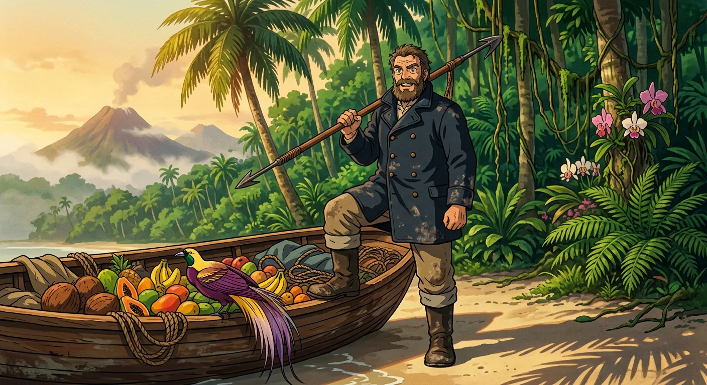
Tropical Bounty and Forest Treasures
The Professor and his friends had been living on the Nautilus for two months. They were not really guests but more like prisoners on the submarine. So when Captain Nemo let them visit a beautiful island, they felt so happy to walk on real ground again. Ned the Canadian was especially excited to stand on solid earth.
The island was full of amazing tall trees and lovely plants. Ned found a coconut palm right away and got some coconuts down. The fresh coconut milk and sweet coconut meat tasted wonderful after eating the same submarine food every day. They also found breadfruit trees and made yummy roasted treats. They gathered vegetables and beans too.
The next day they went exploring again and saw colorful parrots and beautiful birds of paradise with bright feathers like sunshine. Conseil caught a special green bird, and Ned found some animals for dinner. That evening they cooked a delicious meal on the beach and felt so free and happy. They even wondered if they should stay on the island forever. But then a stone suddenly fell near them, and they knew someone else was on the island too.
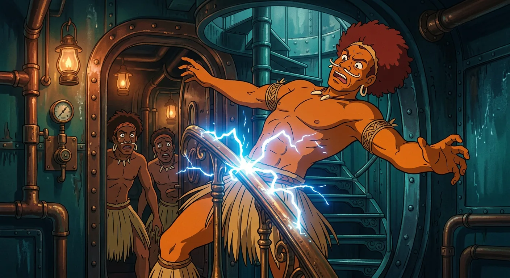
Savages at the Shore
Professor Aronnax, Conseil, and Ned Land were having a nice picnic on the island. Suddenly, some stones flew through the air and knocked food right out of Conseil's hands! A group of people from the island had found them. The three friends hurried back to their little boat. Ned Land carried all the food he had gathered because he did not want to leave it behind.
When they got back to the Nautilus, Captain Nemo was playing music on his organ. He was not worried about the island people at all. He said his submarine was very safe. That night, the Professor looked up at the beautiful stars and thought about his home far away. The next morning, many more island people came to the shore in canoes. They were very curious about the strange metal ship. But Captain Nemo had a clever trick. He made the ship's railing give a little zap, like static electricity. The curious visitors got a surprise and decided to leave. Then the Nautilus floated free and sailed away into the wide, wonderful sea.
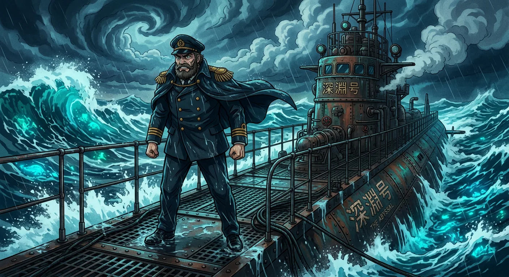
Drifting Through Phosphorescent Seas
The *Nautilus* sailed very fast through the sea. It could go thirty-five miles in just one hour! The amazing ship used electricity for everything. It made the lights glow and the engine run. Captain Nemo was very clever to build such a wonderful invention.
They traveled through warm waters near islands and reefs. Then something magical happened one night. The ocean began to glow with soft, shimmering light! Tiny glowing creatures filled the water all around them. Porpoises and fish swam through the sparkles like dancers in a fairy show. It was so beautiful that everyone forgot about the world above.
But then Captain Nemo spotted something far away on the ocean. He looked very upset and would not explain why. He asked the travelers to go to their room and stay there. They ate their dinner and felt very sleepy. Soon they all fell into a deep, deep sleep. What had Captain Nemo seen? That mystery would have to wait until later.
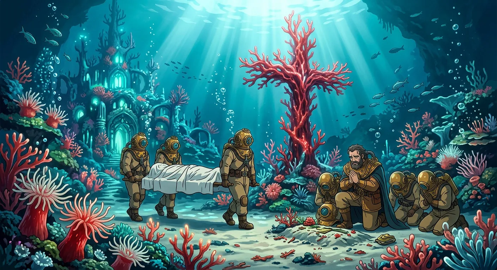
Death and Tears Beneath the Waves
The next morning, Professor Aronnax woke up feeling fine. But he could not remember how he got back to bed! His friends Ned and Conseil felt the same puzzled way. The submarine floated calmly on the water as always.
Captain Nemo looked very tired and sad that day. He asked the Professor for help with a hurt sailor. The poor man had been in a bad accident. He was too hurt to get better, and this made everyone feel very sorry. Aronnax saw tears in the Captain's eyes.
The next day, they put on diving suits and walked underwater. They visited a beautiful coral kingdom on the ocean floor! Tiny sea creatures made flowers that looked white and pink. Some coral even looked like little trees in a magical forest. The crew had come to say goodbye to their friend who had passed away. They found a quiet, peaceful spot among the pretty coral. Captain Nemo and his sailors knelt down together. They were gentle and kind as they remembered him.
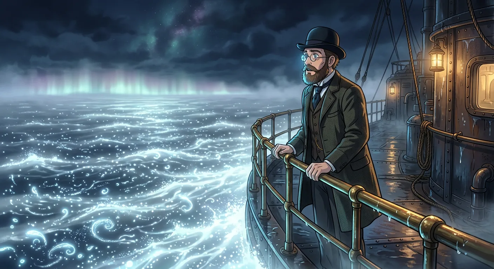
Mysteries of the Deep Waters
The underwater ship called the Nautilus sailed into the Indian Ocean. This is a huge part of the sea with very clear blue water. The narrator watched all kinds of amazing fish swim past the big windows. Some fish looked like little armored boxes. Others could squirt water to catch bugs! There were beautiful birds called albatrosses flying above the waves too.
Captain Nemo was still a mystery to everyone on board. He seemed like a very smart man who loved the sea. But he also seemed sad and wanted to stay far away from other people. The narrator wondered why the Captain felt this way. His friend Conseil thought the Captain just liked being alone to study ocean life.
The ship crossed the equator and stopped near a pretty island made of coral. They collected lovely shells there. One magical night, the whole ocean seemed to glow milky white! Tiny glowing creatures made the water shimmer like starlight for miles and miles.
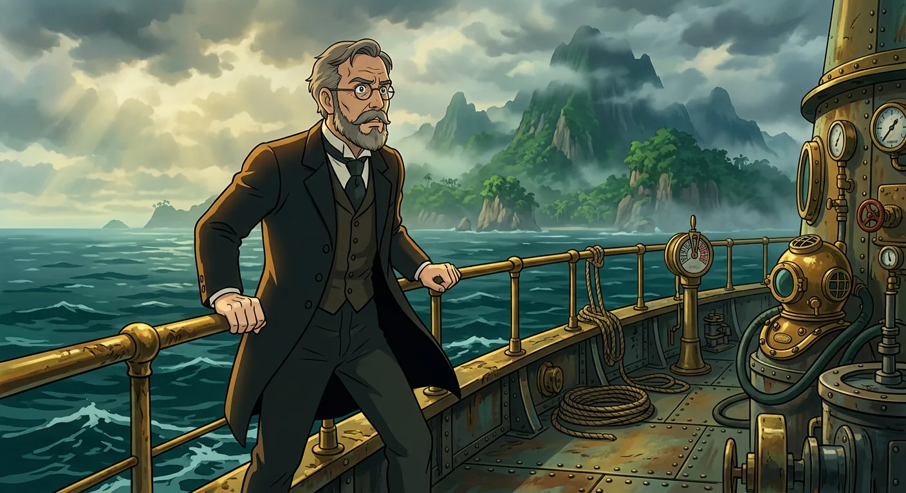
The Pearl Fisheries of Ceylon
Professor Aronnax had been under the sea for a long time. So when the Nautilus came up one sunny day, he felt so happy. He could see land in the distance! It was a beautiful island called Ceylon. The island looked like a shiny pearl hanging near India.
Captain Nemo came up on deck with a kind offer. Would the Professor like to visit a place where people find real pearls? Aronnax said yes right away. That sounded wonderful! But then Captain Nemo asked a strange question about sharks. The Professor felt a little worried after that.
His friends Conseil and Ned Land came to talk with him. They were excited about the trip. Aronnax told them all about pearls and how oysters make them. Pearls start as tiny bits of sand inside the oyster shell. Then they grow into something beautiful and round. The three friends would go on this adventure together. Conseil promised to stay close to his dear Professor no matter what.
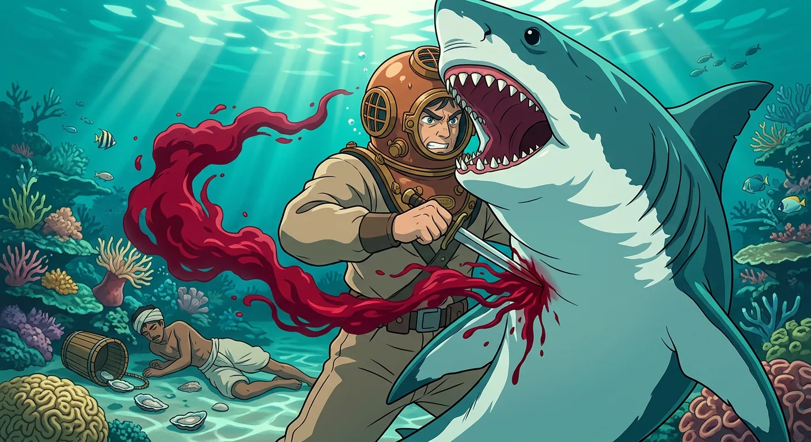
Dangers of the Pearl Beds
Before the sun came up, Professor Aronnax woke very early. Captain Nemo wanted to take him on a special trip! Conseil and Ned Land came too. They all rowed a small boat to the waters near Ceylon. Under these warm seas were beds full of oysters that made beautiful pearls.
The friends put on special diving suits and helmets. They walked on the ocean floor and saw amazing things! There were pretty fish with golden stripes and colorful sea plants everywhere. They found millions and millions of oysters. Then Captain Nemo led them to a hidden cave. Inside was a giant shell, bigger than a bathtub! It held a pearl as big as a coconut, the most wonderful pearl in the whole world.
On their way back, they saw a poor diver in trouble. A big scary shark was coming toward him! Captain Nemo was so brave. He fought the shark with just a knife. Then Ned Land helped by throwing his harpoon. Together they saved the diver! Captain Nemo gave the man a bag of pearls as a gift. Back on the submarine, Captain Nemo thanked Ned Land. It was a very exciting day under the sea.
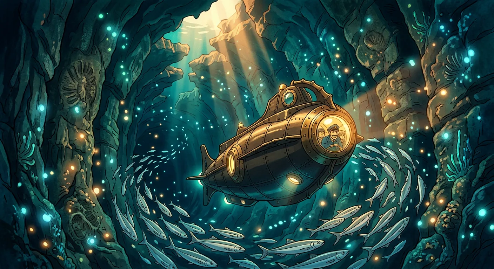
Passage Through Ancient Waters
The *Nautilus* sailed on through warm blue seas, passing pretty coral islands and sandy coasts. Ned Land was feeling grumpy and worried. He wondered where they were going, since the Red Sea seemed like a dead end with no way out. But the narrator still loved every moment of their amazing underwater adventure.
The submarine glided past white towns with round-topped buildings and black rocky shores. They saw beautiful coral gardens and tiny volcanic islands poking up from the water. One day, Captain Nemo came up to talk and share wonderful stories about the sea. He told how tiny plants could make the water look red, giving the Red Sea its name. Then he shared an exciting secret. He had found a hidden underwater tunnel that went right under the land! Fish he had tagged on one side turned up on the other side, proving the tunnel was real. Soon the *Nautilus* would swim through this secret passage and pop out in a whole new sea.
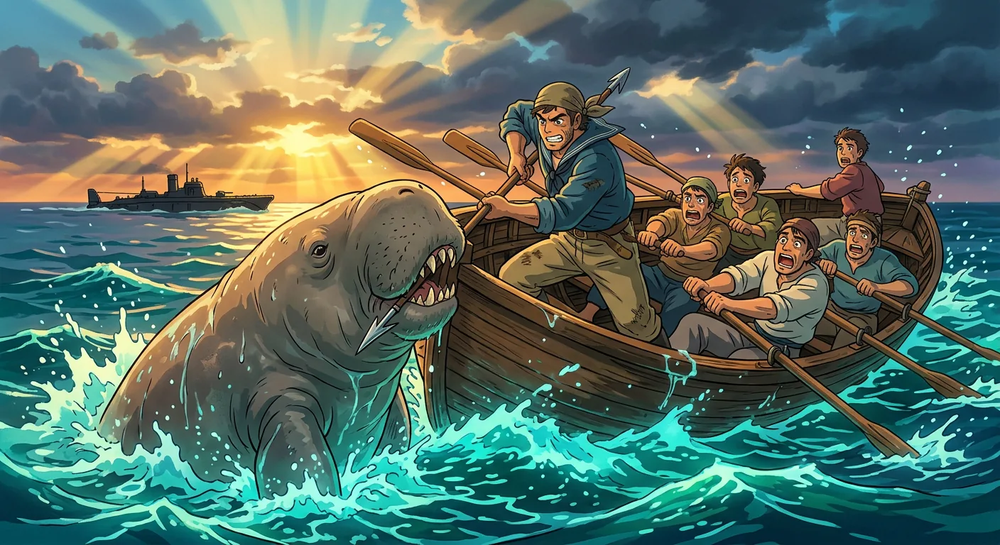
The Dugong Hunt in the Red Sea
The submarine rose up near the coast of Arabia one evening. Professor Aronnax saw a pretty town with white buildings glowing in the sunset. Wooden houses and cozy huts dotted the land beyond. When night came, the ship went back underwater where the sea sparkled with tiny lights.
The next day brought a big adventure. Ned Land spotted a huge sea creature called a dugong swimming far away. It was a gentle animal that looked a bit like a giant seal. Captain Nemo let Ned take a small boat to go see it. Ned and some helpers rowed out across the waves. The dugong led them on a long chase, swimming and diving through the water. Finally they got close enough to watch it swim away into the deep.
Later, the submarine did something amazing. Captain Nemo steered through a secret underwater tunnel that went right under the land. In just twenty minutes, they traveled from one sea to another. Professor Aronnax felt such wonder at this magical journey through hidden waters.
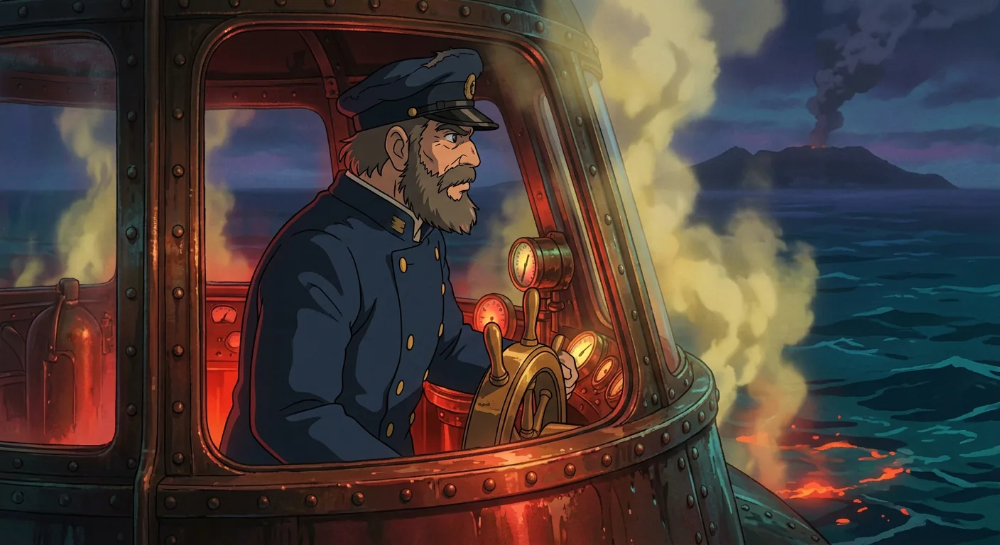
Escape Plans in European Waters
One bright morning, Professor Aronnax climbed up to look around. He was amazed to see they had reached a new sea! The submarine had traveled very far during the night. Now they could see the coast of Egypt in the distance.
Ned Land wanted to talk about escaping. He missed his home very much. The three friends whispered together where no one could hear. Ned hoped they could swim to shore on a dark night. But Aronnax was not so sure. He thought Captain Nemo was very clever. The Captain would be watching them carefully in these busy waters.
The days that followed were tricky for the friends. The submarine stayed deep underwater most of the time. They sailed past beautiful islands and even saw water that bubbled and steamed from an underwater volcano! Captain Nemo told them all about it. The three friends kept hoping for a chance to leave, but none came yet.
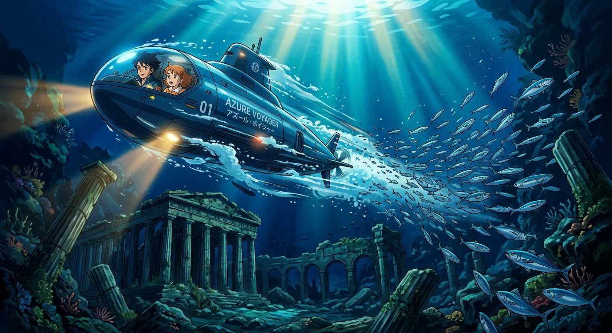
A Swift Passage Through Haunted Waters
The Nautilus sailed into a beautiful blue sea called the Mediterranean. This sea is like a big pool between Europe and Africa. The water sparkled in the sunshine, and the shores had sweet-smelling flowers and orange trees. But the submarine moved very, very fast through these waters. The whole trip took only two days!
Captain Nemo stayed hidden in his room the entire time. It seemed like being near land made him feel uncomfortable or sad. Maybe the shores reminded him of things he wanted to forget. Ned Land had hoped to escape here, but the submarine was going much too fast. No one could safely leave a boat moving that quickly. At night, the Nautilus came up to get fresh air. During the day, the narrator could only peek at the pretty sea like watching scenery zoom past a train window. Soon they passed through a narrow spot near some very old ruins and sailed back out into the wide Atlantic Ocean.
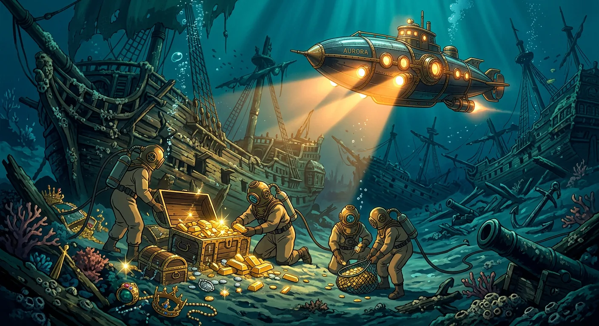
The Escape Plan Takes Shape
The *Nautilus* had been traveling through the huge Atlantic Ocean for many months. One day, the submarine came up to the surface near Spain. But the weather was very stormy, with big winds and crashing waves. Aronnax and his friends Ned Land and Conseil could only stay outside for a little while before going back inside.
Then Ned Land told Aronnax something exciting. He had a plan for them to escape that very night! A small boat was ready with oars and food. The coast was close, and it was cloudy and dark outside. Aronnax felt mixed up inside. He wanted to be free, but he also loved seeing all the amazing things on the submarine.
But then something surprising happened. Captain Nemo took them to look through the big glass windows. Down on the sandy ocean floor, they could see old sunken ships filled with sparkling gold and silver treasure! Nemo's helpers were bringing up the shiny coins and jewels. Captain Nemo said he used this treasure to help people who were sad and in need. The escape would have to wait for another day.
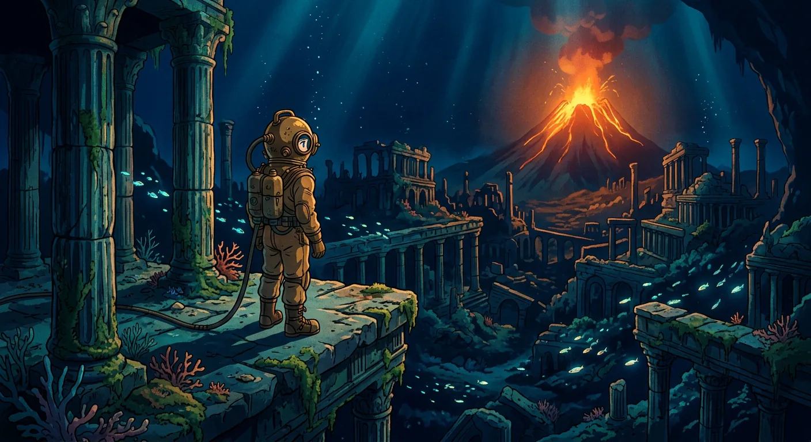
The Atlantic's Sunken Secrets
Ned came to see his friend looking upset. Their plan to leave the submarine had not worked. The Captain had stopped the ship at just the wrong time! Ned was sad, but he said they would try again soon. When they looked at the map, they were very far from any land. Ned felt stuck, but his friend felt a little peaceful. He could go back to learning about the sea.
That night, Captain Nemo came with a surprise. He asked if his guest wanted to take a walk on the ocean floor in the dark! They put on their special diving suits and stepped out into the deep, dark water. Far away, a bright red glow shone like a campfire. They walked through an underwater forest of old stone trees toward the light. It came from a volcano glowing beneath the waves! And there, in the firelight, they saw something amazing. Old buildings lay tumbled on the seafloor. It was a lost city from long, long ago called Atlantis! They stood quietly, looking at this wondrous secret place, before walking back home to their ship as the sun came up.
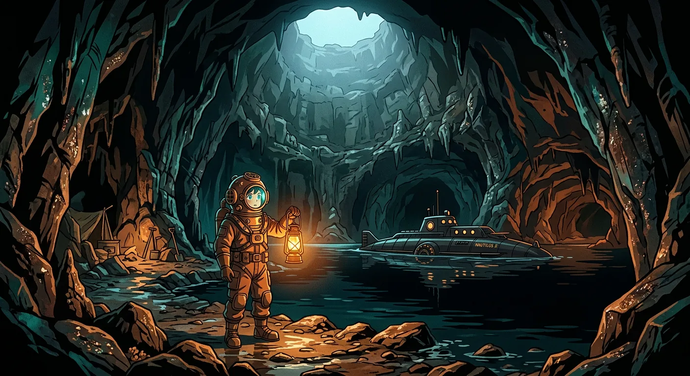
Into the Heart of a Volcano
Professor Aronnax woke up late one morning on the submarine called the *Nautilus*. The ship was moving through the deep ocean. He saw many amazing sea creatures swimming by. There were huge rays that could leap above the water. There were bright, colorful fish that sparkled like jewels.
Later that day, something wonderful happened. The *Nautilus* floated up inside a secret cave. It was hidden inside an old, sleeping volcano filled with water. Captain Nemo showed them this magical place. The cave was like a giant underground lake with rocky walls reaching up high. A tiny circle of light glowed far above them. The Captain said this was his secret hiding spot, safe from all storms.
The next day, Professor Aronnax explored the cave with his friends Conseil and Ned Land. They walked on sandy shores and climbed sparkly rocks. Ned found honey in a tree and shared it with everyone. They saw birds flying and tiny crabs crawling about. It was a grand adventure inside the heart of a mountain.
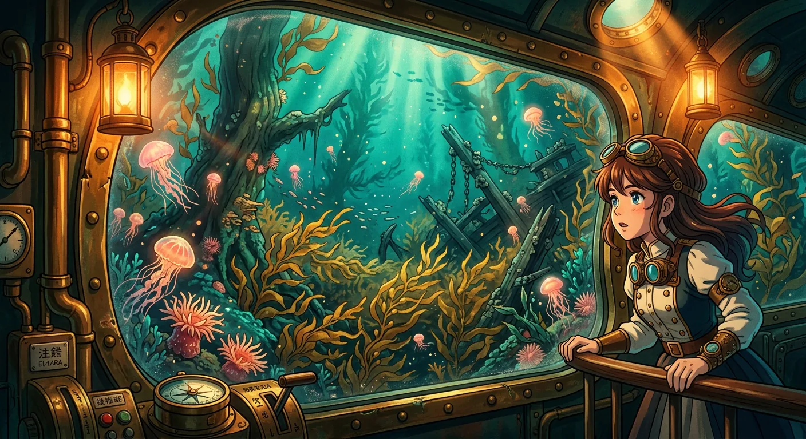
A Meadow in the Atlantic
One special day, the submarine called the *Nautilus* visited a very strange place. It was like a giant meadow floating right in the middle of the ocean! Thick tangles of seaweed covered the water like a soft green blanket. Captain Nemo kept his ship swimming below this seaweed carpet so nothing would get stuck. Floating above were old tree trunks that had drifted from faraway rivers. Pretty pink birds rested on the water, and colorful jellyfish danced in the waves—some green, some red, some blue.
The ship sailed on for many days after that. Ned Land felt worried because he missed his home and the sea seemed to go on forever. The Captain stayed busy with his work and his books. At night, he played sad music on his big organ while the ship floated quietly. Then one day, the *Nautilus* dove down, down, down—deeper than anyone had ever gone before! The whole ship shook and groaned. When they finally came back up, the submarine burst through the waves like a giant bubble.
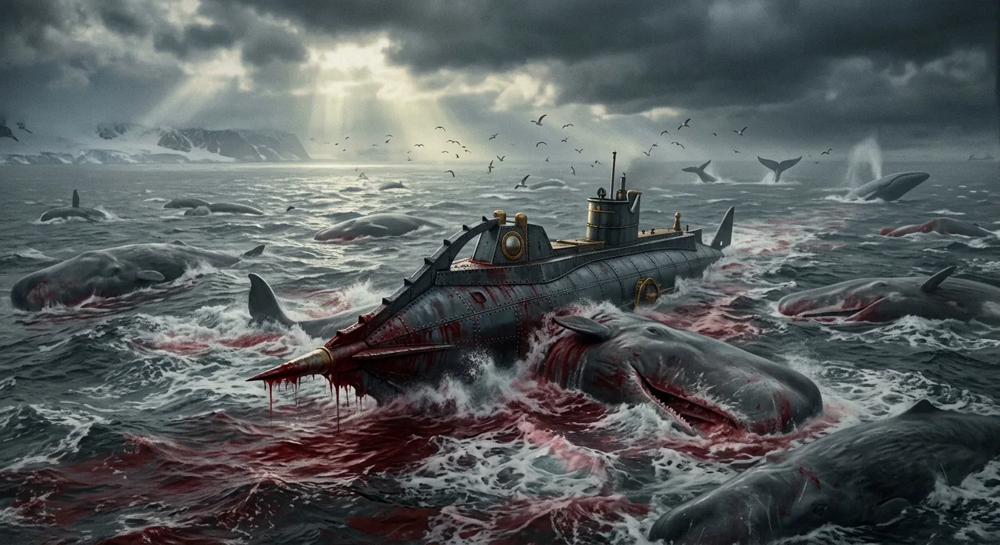
Ned Land's Restless Longing
The *Nautilus* sailed farther south into cold, icy waters. Ned Land felt very sad and restless. He missed his old life as a harpooner. He did not say much, but everyone could tell he wanted to go home. One day, Ned and Conseil visited the narrator to talk about the ship and its crew. They wondered how many people lived aboard. After counting carefully, they found there were not too many sailors on the *Nautilus*.
Then something wonderful happened! The submarine came up to the surface. There was a big group of beautiful whales swimming and playing nearby. Ned got very excited because he used to hunt whales long ago. He asked Captain Nemo if he could chase them. But the Captain said no. He explained that these gentle whales should be left alone. He wanted to protect them, not hurt them. Ned felt disappointed, but he watched the whales swim peacefully through the sparkling sea.
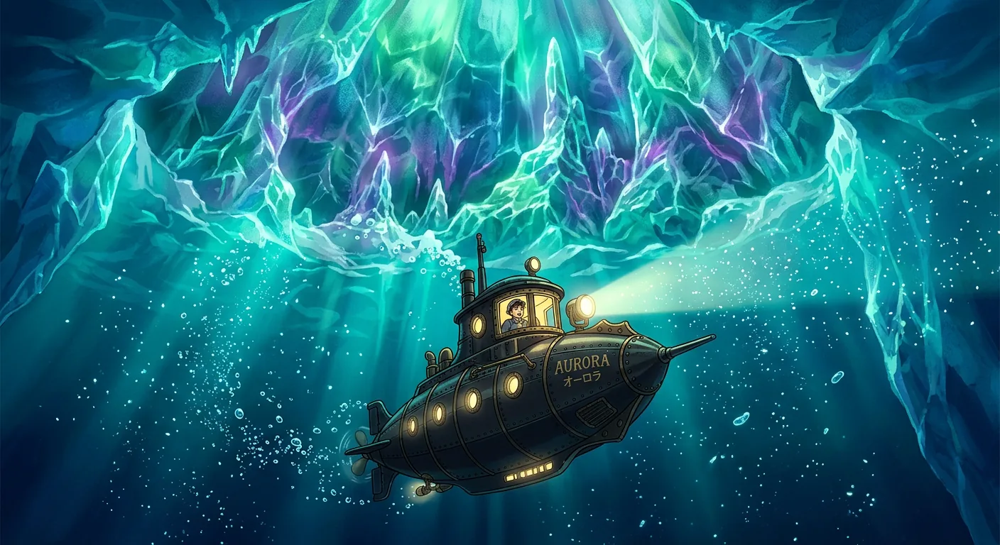
Frozen Cathedrals of the Antarctic
The *Nautilus* sailed far south toward the bottom of the world. Soon the crew saw their first chunks of floating ice. Ned Land had seen ice before, but his friends stared in wonder. The icebergs were so beautiful! Some glowed green like jewels. Others sparkled with a thousand tiny lights. Some looked like magical marble cities floating on the water.
Captain Nemo steered the submarine past mountains of ice and through snowy storms. The *Nautilus* was very strong and kept pushing forward. But then a giant wall of ice blocked their way completely. Everything was frozen and silent, except for seabirds flying overhead. When the crew worried they were stuck, Captain Nemo had a clever idea. They would go *under* the ice instead of over it! The submarine dove deep into the dark, cold water. For many hours they traveled beneath the frozen ceiling. Then, one happy morning, the captain shared wonderful news. The sea ahead was finally open again!
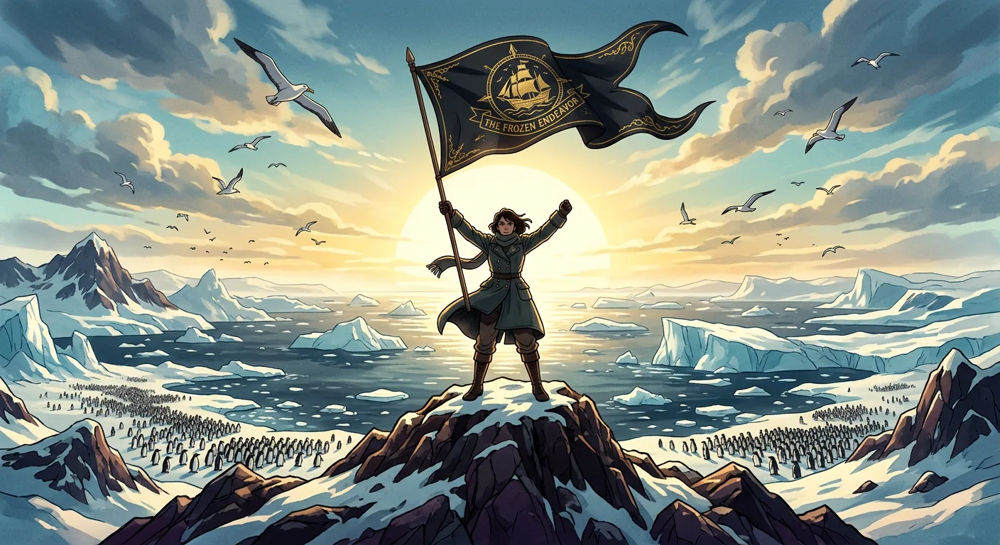
First Footsteps on the Antarctic Shore
The *Nautilus* finally sailed free from the ice into open water. Birds filled the sky, and colorful fish swam all around. Spring had come to this cold place, and the air felt warmer.
Captain Nemo wanted to find out exactly where they were. But cloudy skies made it hard to see the sun for days. They landed on a small rocky island covered with tiny plants and seaweed. Captain Nemo was the first to step onto the shore. He stood on a high rock and looked out at everything with wonder.
The island was full of amazing animals. Thousands of penguins waddled on the rocks, making loud funny sounds. Giant birds called albatrosses flew overhead with huge wings. Seals and big sea elephants rested on the beach. Conseil asked the names of every creature he saw.
Finally the sky cleared, and they climbed a tall volcano. At the very top, Captain Nemo checked his instruments carefully. At exactly noon, he smiled and said they had reached the South Pole! He raised a special flag to celebrate this amazing moment.
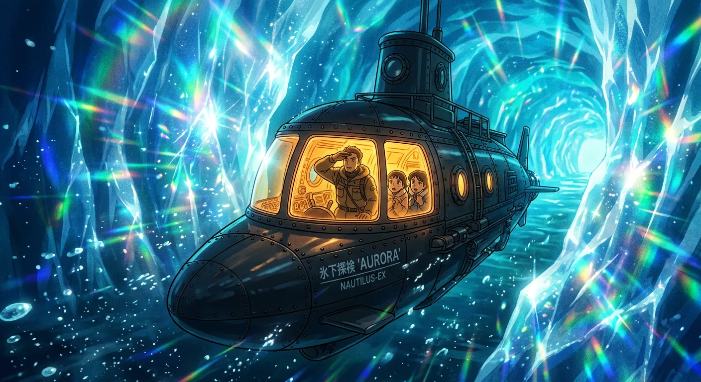
Trapped Beneath the Turning Ice
It was a very cold morning when the *Nautilus* began its journey under the ice. The sky was full of bright stars, and the sea was starting to freeze everywhere. The whales had swum away to find warmer water, but seals still lived on the ice above.
The submarine dove deep and traveled north, sliding quietly beneath a giant iceberg. But in the middle of the night, something scary happened! A huge mountain of ice had tipped over and bumped into the ship. Everything shook, and furniture fell down inside. Captain Nemo looked worried, which was very unusual for him. The ice had pushed the *Nautilus* into a tunnel made of frozen walls. The tunnel was beautiful though—the lights from the ship made the ice sparkle like colorful jewels, blue and green and shining bright. But then the tunnel closed up behind them too. The *Nautilus* was stuck, trapped inside the ice with no way out. Everyone felt very scared about what might happen next.
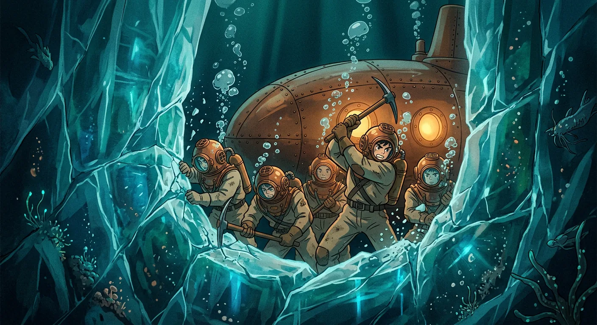
Trapped Beneath the Ice
The *Nautilus* was stuck in the ice! Thick frozen walls surrounded the submarine on every side. Captain Nemo stayed calm but told everyone the truth. They needed to get free soon, or the air inside would run out. Everyone had to work together.
The crew started digging through the ice with tools. Ned Land helped with his strong arms. Professor Aronnax and Conseil took turns digging too. It was hard work, but working outside felt good because the air was fresher there. Captain Nemo had a clever idea to pump hot water around the ship. This helped stop more ice from forming.
After many long days, only a thin layer of ice was left. The *Nautilus* rose up and broke through the ice like a whale leaping from the water! Fresh air rushed into the submarine. Everyone took big, wonderful breaths. Ned and Conseil had shared their last bit of air with Aronnax to help him. They were finally free and safe, floating in the open sea once more.
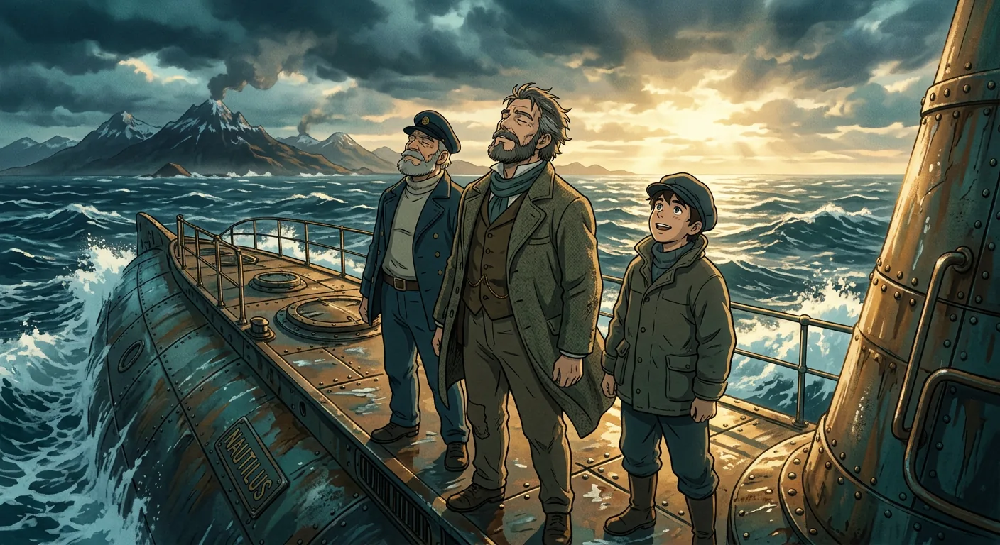
Gasping Northward Through Atlantic Waters
One day, Professor Aronnax finally got to go up on the deck of the *Nautilus*. He took a big breath of fresh ocean air. It felt so good after being inside for so long! His friends Ned Land and Conseil were with him. They were all very happy to be outside again.
The submarine sailed north very fast. They passed Cape Horn and saw a tall mountain on the land. Under the water, they saw beautiful gardens of seaweed. Seals and otters swam around, looking for food. The *Nautilus* moved so quickly that they could not stop to see many things. Ned wanted to leave the ship, but the waves were too big and wild. So they stayed on board. Conseil found a strange flat fish, but it gave him a little zap! Ned and the professor helped him feel better right away. Soon they saw gentle manatees swimming and eating underwater plants. The submarine kept going north, and Professor Aronnax wondered where Captain Nemo would take them next.
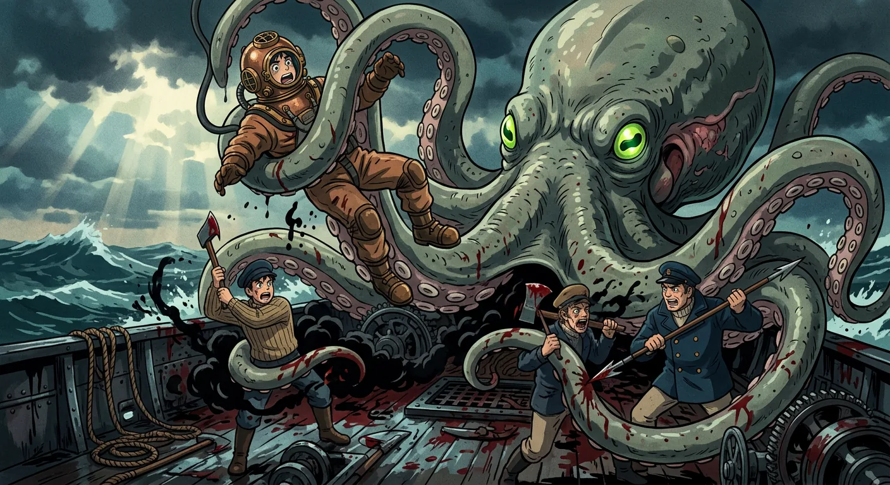
Monsters of Legend and Sea
The Nautilus sailed near some faraway islands for a few days. Ned Land could see the tall mountains in the distance. He wished he could find a way to leave the submarine and go home. But there was no safe way to escape in the deep ocean. The three friends had been on this underwater journey for six whole months now.
Captain Nemo seemed very sad lately and stayed by himself a lot. No one knew why he felt so blue. One day, something strange appeared outside the window. It was a giant squid with big green eyes and long wiggly arms. Then more giant squids came swimming close to the submarine. The squids bumped against the ship and made it hard to move. Captain Nemo and his crew had to go outside and shoo the squids away. It was very hard work and everyone got tired. When the squids finally swam off, Captain Nemo looked out at the sea with tears in his eyes.
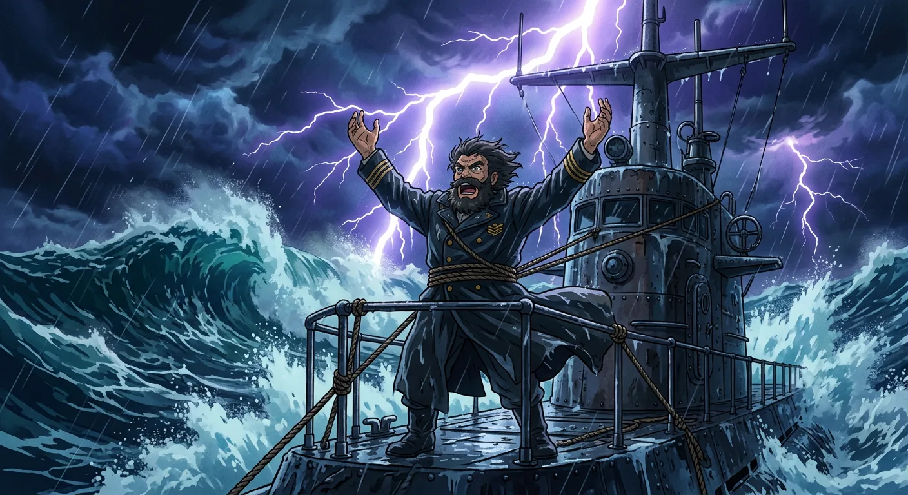
Grief, Currents, and Captive Longings
A very sad thing had happened on the submarine. One of the crew members got hurt badly by a sea creature, and Captain Nemo cried by the ocean waves. He had lost a friend, and everyone felt very sorry. For ten whole days, the Nautilus just floated quietly on the water, like it was sad too.
Then the submarine started moving again and entered a special ocean river called the Gulf Stream. The water there glowed with pretty lights! But stormy weather came, and Ned Land felt more and more unhappy. He missed his home in Canada so much. He talked about his river and his town, and you could tell his heart ached to be free. When the narrator asked Captain Nemo if they could leave, the Captain said no in a very serious voice. Then a big, wild storm came with howling winds and bright lightning. Captain Nemo stood outside watching it bravely. Finally, the submarine dove deep underwater where everything became quiet and peaceful again.
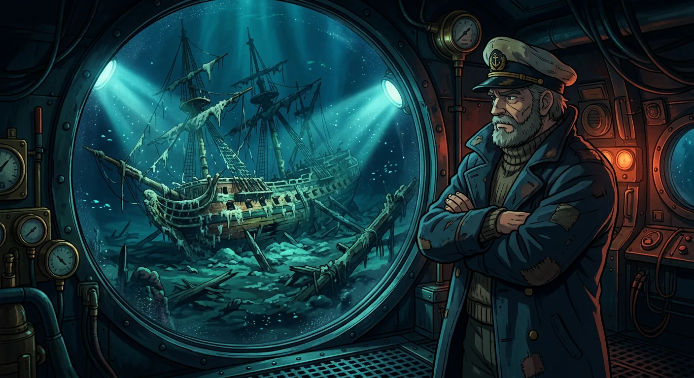
The Atlantic Cable's Silent Depths
After the big storm, the *Nautilus* was pushed far off course. Ned Land felt very sad because they could not reach land. He stayed quiet and alone for many days. The underwater boat floated through thick, misty fog where it was hard to see anything at all. Deep below, old ships rested on the sandy ocean floor, slowly becoming part of the sea.
Then something wonderful appeared! A long, long cable stretched across the bottom of the ocean like a sleeping snake. This special cable carried messages all the way from America to Europe, like whispered words traveling underwater. Later, Captain Nemo took the *Nautilus* to a very special place. He found an old French ship called the *Avenger* resting peacefully in the deep water. The ship had been very brave long ago. Captain Nemo stood quietly, looking at it with great respect. His eyes showed deep feelings he rarely shared with anyone.
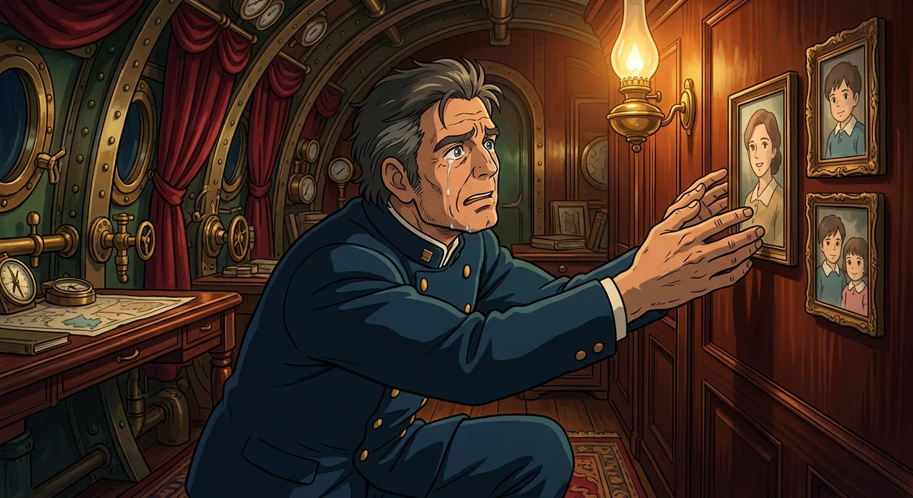
Vengeance Surfaces From the Deep
Captain Nemo stood very still, looking out at the dark water. He seemed so sad and full of big feelings. Professor Aronnax watched him and wondered about all the things Captain Nemo had been through. Something very hard had happened to him long ago, and it still hurt his heart.
Then a ship appeared on the water above them. Ned Land got excited because he thought maybe they could go home. But Captain Nemo did not want to talk to the ship. He was upset with the people on it because of something painful from his past. He had lost his family, and that made him feel so much hurt inside. The Nautilus dove deep under the waves and stayed hidden. Later, Aronnax saw Captain Nemo in his room, looking at a picture of a kind woman and two little children. Nemo missed them so much that he cried. Aronnax and his friends wanted very badly to find a way home soon.
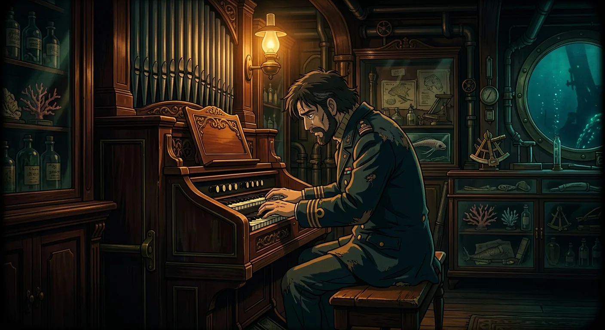
Flight Into the Unknown North
The *Nautilus* was racing through dark, cold waters far up north. Professor Aronnax felt very upset about Captain Nemo. Something bad had happened, and the Captain had done things that made Aronnax feel sad and scared. Now the Professor wanted to leave the submarine more than ever.
For many days, everything felt strange and foggy. Captain Nemo stayed hidden, and no one saw him or his crew. Ned Land and Conseil stayed quiet too. Then one morning, Ned woke Aronnax with exciting news. He had spotted land not far away! They would try to escape that very night in a small boat.
All day, Aronnax waited nervously. That evening, he heard Captain Nemo playing sad music on his organ. Nemo whispered something quietly, almost like a prayer. Then Aronnax hurried to meet his friends. But suddenly, the water started spinning very fast around them! The little boat broke free and went tumbling through the wild waves. Aronnax bumped his head and everything went dark.
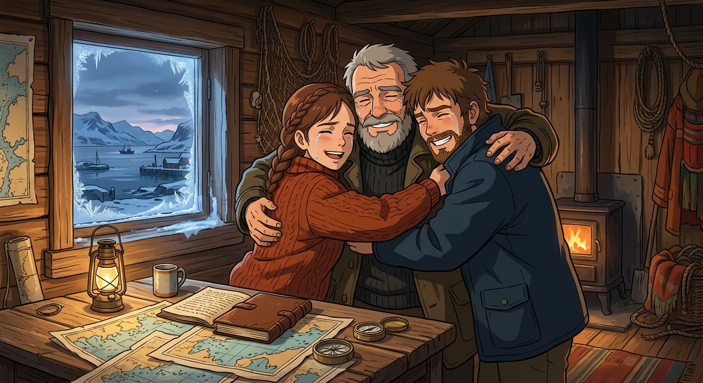
Survivors Reflect on an Incredible Journey
The adventure is over, but no one is quite sure how it ended. There was a big, spinning whirlpool in the water, and the small boat got caught in it. Everything went dark, and the storyteller cannot remember what happened next. When he woke up, he was safe and warm inside a fisherman's little house on some islands far away in Norway. His two dear friends, Conseil and Ned Land, were right beside him, holding his hands. They hugged each other tight, so happy to be together and safe after everything they had been through under the sea.
They had to wait a while for a boat to take them home to France. While waiting, the storyteller wrote down everything about their amazing underwater journey. He wonders what happened to Captain Nemo and the wonderful submarine. He hopes they are still out there, exploring the beautiful ocean in peace.
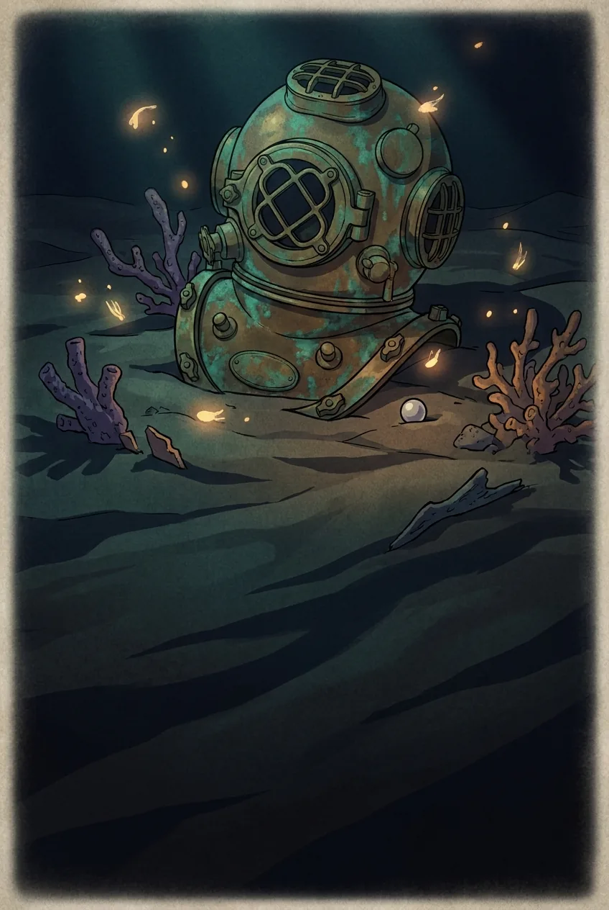